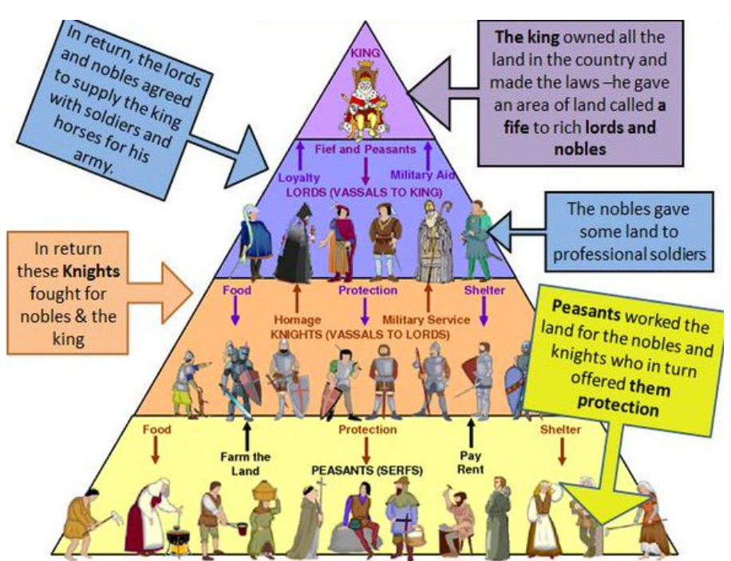
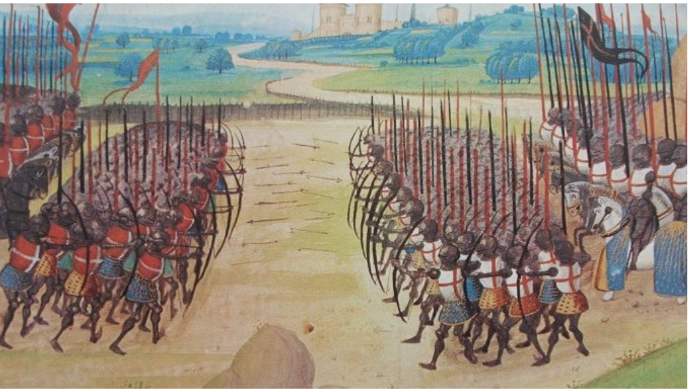
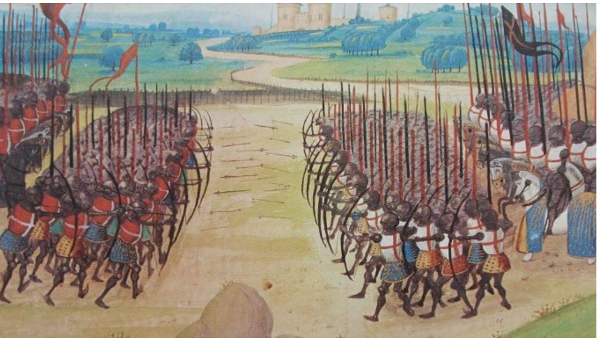
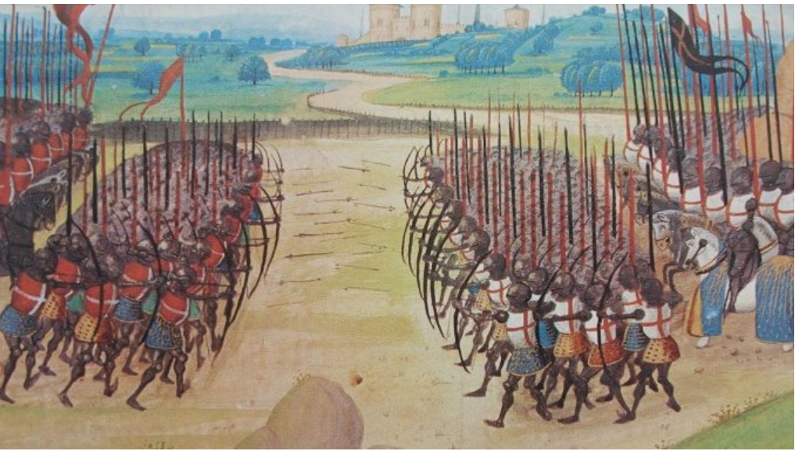

This is our social studies project. Here you will find a lot of interesting
information about the mediaval times. You will learn about how feudalism worked,
how influential the Roman Catholic Church was, what life was like in the towns of
mediaval europe, what events in europe caused the decline of feudalism and the start
of democracy, and how the byzantine empire developed. Every Chapter will be placed in
order of time. Thank you for visiting my website! :)


These are citings for all the pictures above!
Feudalim: http://www.internationalschoolhistory.net/IB/myp_history/4/unit1/feudalism_above.htm
Catholic Church: https://www.irishtimes.com/opinion/guidance-on-catholic-church-reform-might-not-be-from-rome-1.3008588
Mediaval towns: https://www.thegreatcoursesdaily.com/rise-europe-middle-ages/
Hundred years war: https://www.thegreatcoursesdaily.com/the-democratization-of-the-hundred-years-war/
Byzantine empire/Constantinople: https://gohighbrow.com/constantinople-the-worlds-largest-city-in-600-ad/


 
